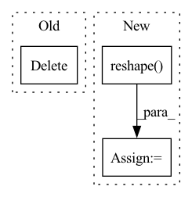

Pattern ID :29539

Before Change
def eval_step(hidden_sizes, output_size, params, features, labels):
del hidden_sizes, output_size
logits = MLP().apply({"params": params}, features)
return compute_metrics(logits=logits, labels=labels)
After Change
def eval_step(hidden_sizes, output_size, jax_func,
params, jax_params, images, labels):
jax_output, jax_params = jax_func(jax_params, images)
features = jnp.reshape(jax_output, [images.shape[0], -1])
logits = MLP(hidden_sizes, output_size).apply({"params": params}, features)
return compute_metrics(logits=logits, labels=labels), jax_params, logits
In pattern: SUPERPATTERN
Frequency: 3
Non-data size: 3
Instances
Fragment ID: 87688479
Project Name: google/uncertainty-baselines
Commit Name: cb581a303749fa4e7f1a19422109627b3a6d61ea
Time: 2022-08-13
Author: no-reply@google.com
File Name: experimental/shoshin/training.py
M Class Name: AnonimousClass
N Class Name: AnonimousClass
M Method Name: eval_step(7)
N Method Name: eval_step(5)
M Parent Class:
N Parent Class:
M File Name: experimental/shoshin/training.py
N File Name: experimental/shoshin/training.py
M Start Line: 93
M End Line: 96
N Start Line: 94
N End Line: 99
'>
Before Change
Px = einsum("xir,rd->xid", Ix, self.rel_rows)
Sx = einsum("ndxy,xid->nixy", q, Px)
Yh = einsum("nixy,neiy->nexy", Sx, v)
del Ix
Yh = self.norm(Yh)
Iy = calc_reindexing_tensor(y, L, device)
After Change
content_out = content_out + rel_pos_out
content_out = content_out.reshape(b, -1, x, y).contiguous()
return self.to_out(content_out)
'>
Fragment ID: 87688477
Project Name: lucidrains/global-self-attention-network
Commit Name: bb923ca7de188475568a799120af2d7985efa6ed
Time: 2020-10-05
Author: lucidrains@gmail.com
File Name: gsa_pytorch/gsa_pytorch.py
M Class Name: GSA
N Class Name: GSA
M Method Name: forward(2)
N Method Name: forward(2)
M Parent Class: nn.Module
N Parent Class: nn.Module
M File Name: gsa_pytorch/gsa_pytorch.py
N File Name: gsa_pytorch/gsa_pytorch.py
M Start Line: 57
M End Line: 78
N Start Line: 57
N End Line: 79
'>
Before Change
def train_step(hidden_sizes, output_size, state, features, labels):
Train for a single step.
del hidden_sizes, output_size
def loss_fn(params):
logits = MLP().apply({"params": params}, features)
loss = cross_entropy_loss(logits=logits, labels=labels)
return loss, logits
After Change
state, jax_params, images, labels):
Train for a single step.
jax_output, jax_params = jax_func(jax_params, images)
features = jnp.reshape(jax_output, [images.shape[0], -1])
def loss_fn(params):
logits = MLP(hidden_sizes, output_size).apply({"params": params}, features)
loss = cross_entropy_loss(logits=logits, labels=labels)
return loss, logits
'>
Fragment ID: 87688481
Project Name: google/uncertainty-baselines
Commit Name: cb581a303749fa4e7f1a19422109627b3a6d61ea
Time: 2022-08-13
Author: no-reply@google.com
File Name: experimental/shoshin/training.py
M Class Name: AnonimousClass
N Class Name: AnonimousClass
M Method Name: train_step(7)
N Method Name: train_step(5)
M Parent Class:
N Parent Class:
M File Name: experimental/shoshin/training.py
N File Name: experimental/shoshin/training.py
M Start Line: 79
M End Line: 90
N Start Line: 77
N End Line: 91